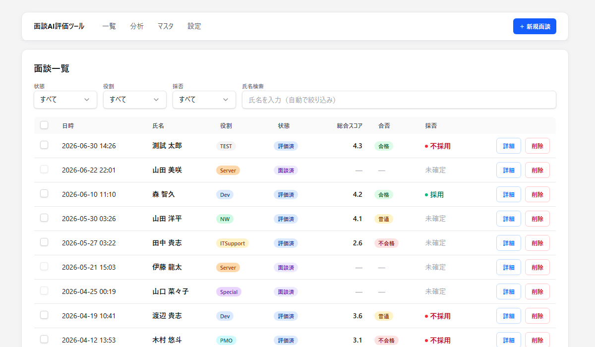
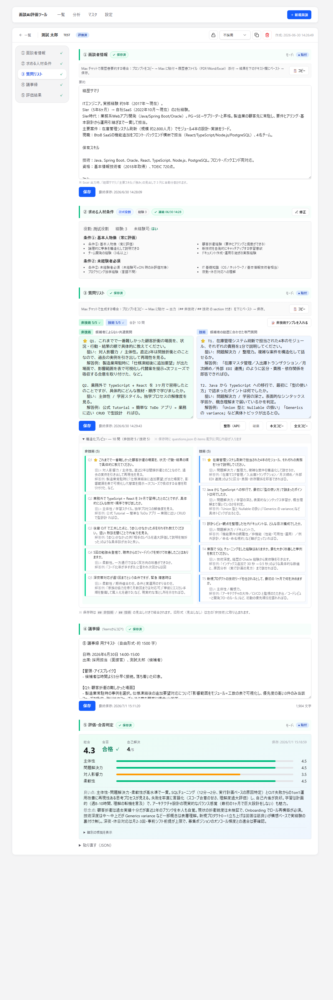
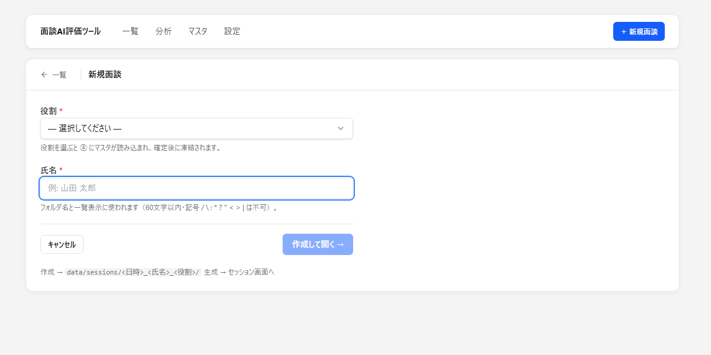
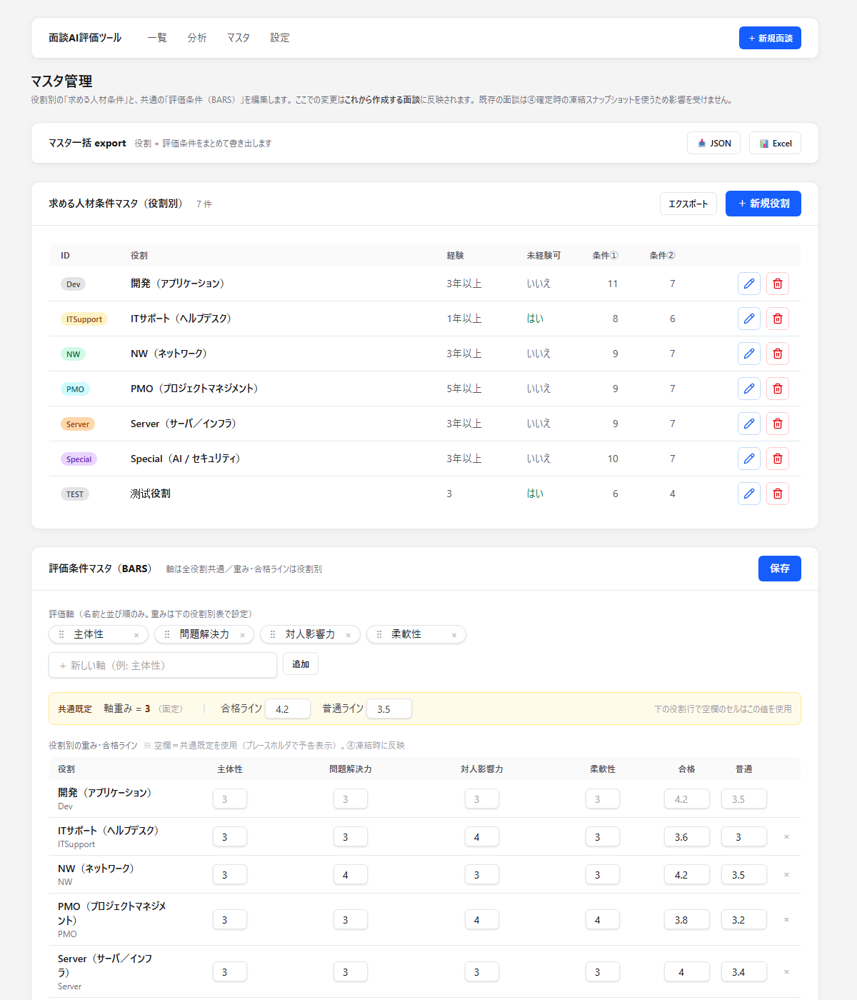
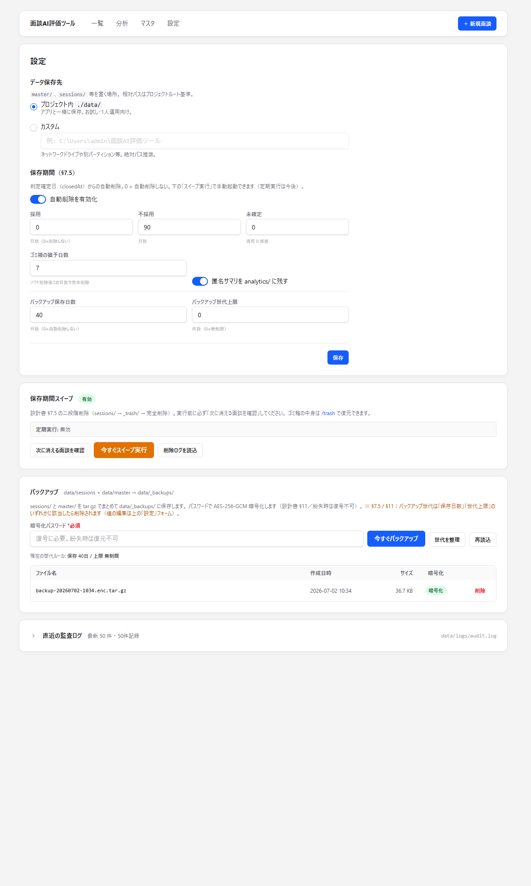
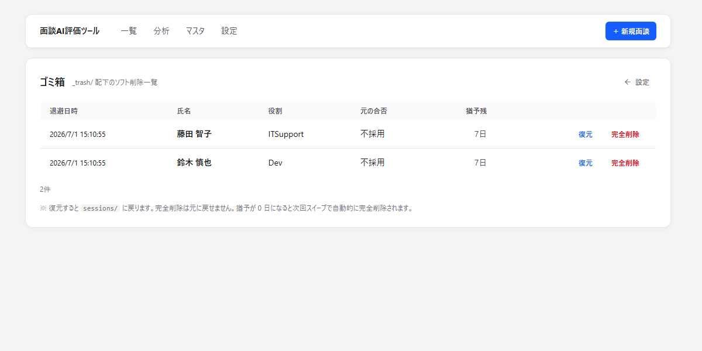
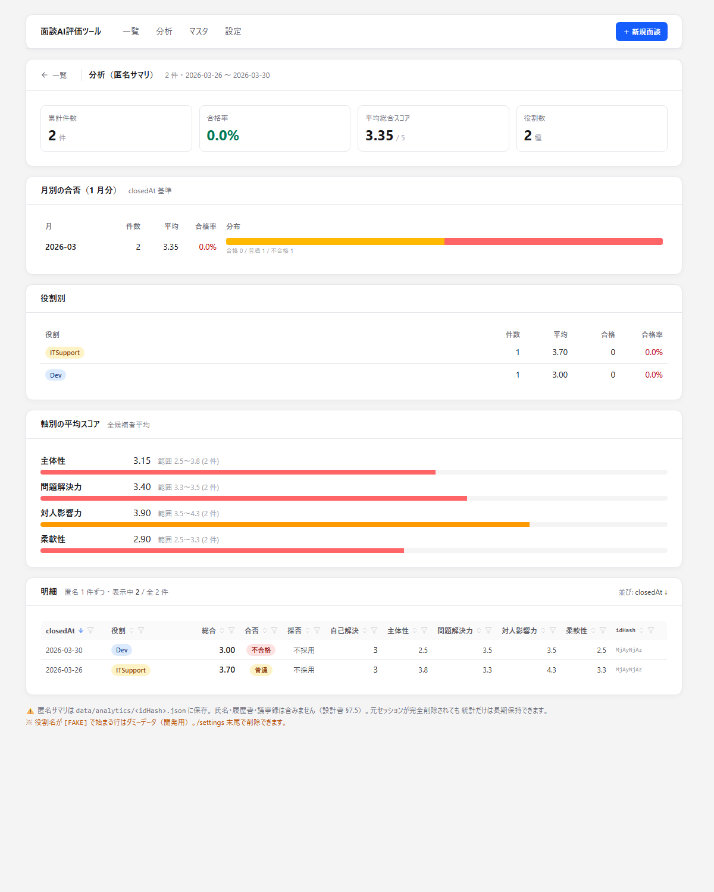
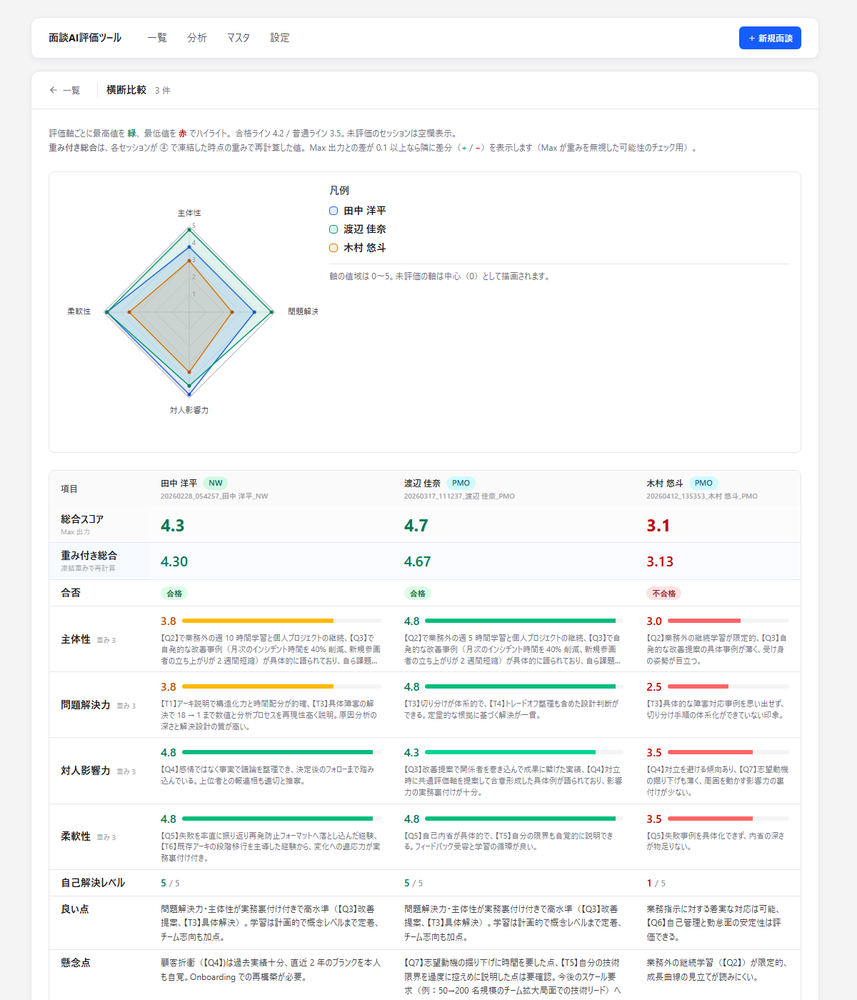
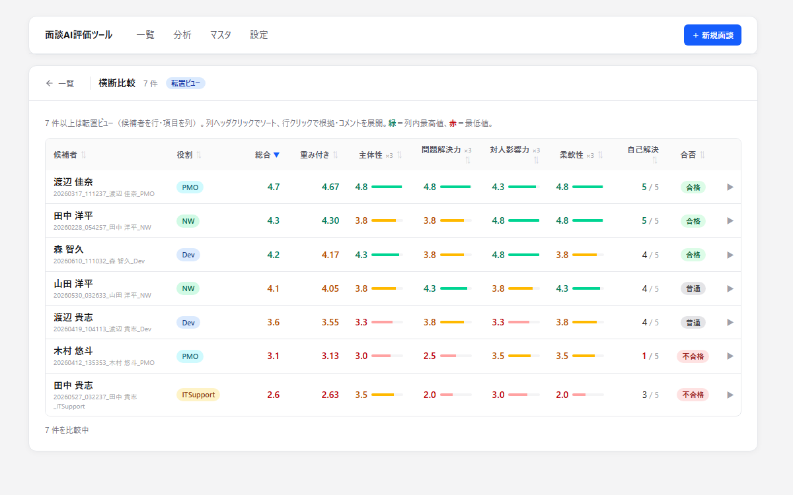
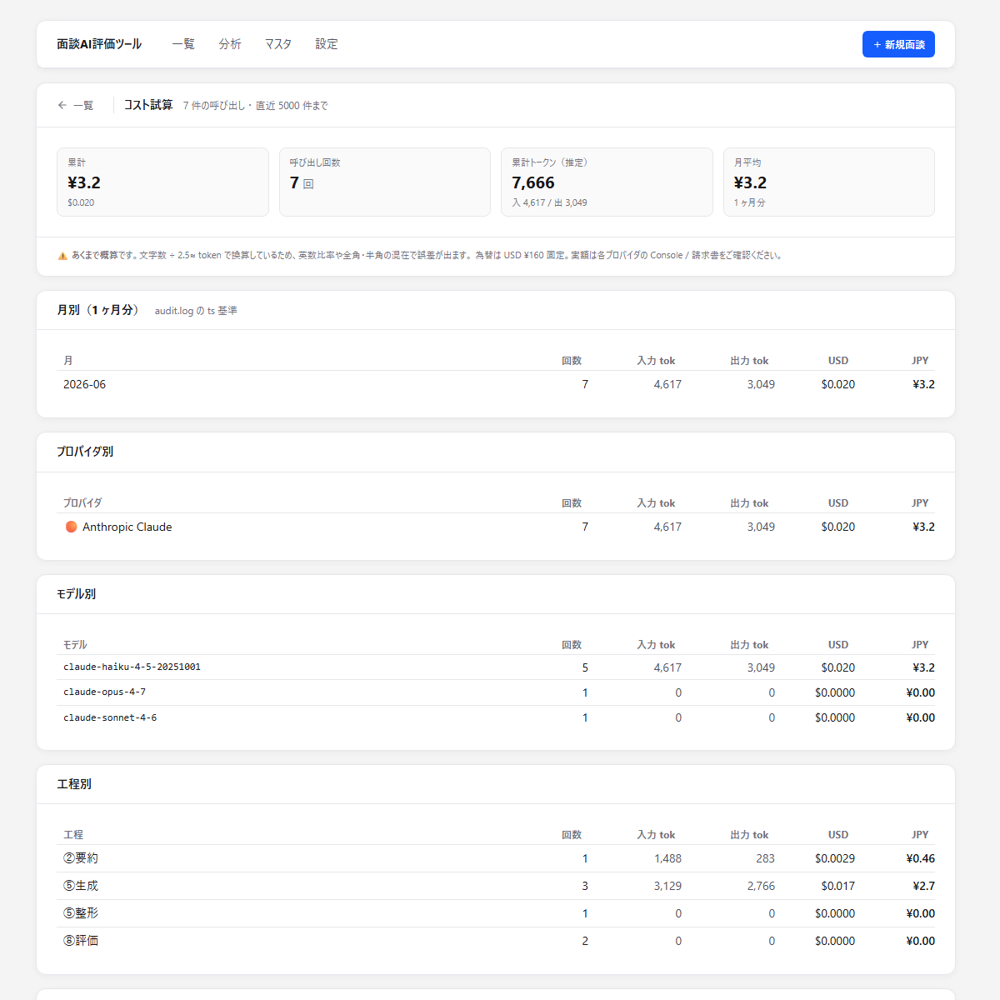

面談AI評価ツール
採用面談 1 件あたりの「候補者要約 → 条件凍結 → 質問づくり → 議事録 → 評価」をローカル PC で完結させるツールです。
このマニュアルについて
左側のメニューで章を切り替えます。各章は 独立したページ として表示され、右側の「このページ内」はその章の小節だけを案内します。
主な機能
- 面談ごとに専用 URL を作って、関連情報を 1 ヶ所に集約
- 履歴書要約・議事録・評価結果を 貼付 で保存（AI に直接投げる必要なし）
- 役割（NW / Server / Dev / PMO / IT / Special）ごとに別々の評価条件
- 面談時点の条件を 凍結 → 後でマスタを変えても過去面談に影響しない
- 過去面談を 匿名サマリとして集計・分析
- Excel ファイル（マスタ / 面談者一覧）を自動更新
- 暗号化バックアップを世代管理
動作モード
本ツールは「貼付モード」で動作します。AI 要約・質問生成・評価は Max などのAI チャット側で実行し、結果をコピー → このツールに貼付という流れです。
AI が直接アクセスする「API モード」は有料オプションです。ご希望の方は別途お問い合わせください。
起動方法
プロジェクトフォルダの start-app.bat をダブルクリックするだけです。
初回
- Node.js 20 以上 をインストール（nodejs.org から、インストーラの「Add to PATH」にチェック）
- プロジェクトフォルダを PC の好きな場所に置く
start-app.bat をダブルクリック- 初回だけ
npm install（3〜5 分）と next build（1〜2 分）が走る
- ブラウザが自動で開き http://127.0.0.1:3939 が表示される
2 回目以降
start-app.bat ダブルクリック → 数秒でブラウザが開きます。
停止
起動時に開いた コマンドプロンプトで Ctrl+C → Y → Enter。
ブラウザを閉じるだけでは停止しません。コマンドプロンプトでの操作が必要です。
画面構成
上部に固定ヘッダ＋ナビ、その下に各ページの本文。右上の「+ 新規面談」でいつでも新規作成できます。
画面全体

一覧画面 (/) — ヘッダ + フィルタ + セッション一覧
ページ一覧
| ページ | URL | 用途 |
|---|
| 一覧 | / | セッション一覧、フィルタ、検索 |
| 新規 | /new | 面談を新規作成 |
| セッション | /sessions/<id> | 面談 1 件の本体（①②③④⑤） |
| マスタ | /master | 役割マスタ・評価条件の編集 |
| 設定 | /settings | API キー・保存先・保存期間など |
| ゴミ箱 | /trash | 削除セッションの復元 |
| 分析 | /analytics | 過去面談を匿名集計 |
| 比較 | /compare | 複数面談を並べて比較 |
| コスト | /cost | API コスト試算 |
基本フロー：全体像
1 件の面談は 新規面談→①→②→③→④→⑤ の順で進めます。
セッション本体（全セクション）

1 つのセッションには ①候補者 / ②条件 / ③質問 / ④議事録 / ⑤評価 が縦に並ぶ
ステータスの自動更新
各ステップで保存すると、対応するステータスに自動で進みます：
- 新規作成 → 編集中
- ② 条件凍結 → 質問公開
- ④ 議事録保存 → 面談済
- ⑤ 評価保存 → 評価済
新規面談を作る 編集中
面談ごとに専用の URL を作るのが最初のステップです。
作成手順
- 画面右上の 「+ 新規面談」 をクリック
- 候補者の 氏名 と、応募 役割（NW / Server / Dev / PMO / ITSupport / Special）を入力
- 「作成して開く →」 をクリック
- 自動的にセッションページ
/sessions/<ID> に遷移
新規作成画面

/new — 役割 と 氏名 を入力
セッション ID について
ID は YYYYMMDD_HHMMSS_<氏名>_<役割> 形式で自動生成。秒まで含むので同一分内の連続作成でも ID 衝突しません。
役割を間違えても
複製機能 で後から変更できます。
① 候補者情報を貼る 編集中
履歴書を AI で要約して、結果をこのエリアに貼ります。
手順
- ① エリア上の 「📋 履歴書要約プロンプト」 でテンプレ プロンプトをコピー
- Max などの AI チャットに貼付 → 履歴書ファイル（PDF / Word / Excel）を添付
- AI が出した要約をすべてコピー（Ctrl+A → Ctrl+C）
- ① エリアの「要約」テキスト枠に貼付（Ctrl+V）
- 「保存」 をクリック
Excel 自動分割
テキスト内に「経歴サマリ：」「主要スキル：」「強み：」の見出しを入れると、Excel エクスポート時に自動で 3 列に分割されます。
② 条件を凍結する → 質問公開
役割マスタの条件と評価軸をこの面談に固定します。
何をするのか
役割マスタの「求める人材条件」と「評価条件」を、この面談に スナップショットとして固定します。後でマスタを変えてもこの面談には影響しません。
手順
- ② エリアで「現在の条件」を確認
- 「条件を凍結する」 ボタンをクリック
- 確認ダイアログで「OK」
- ステータスが 質問公開 に変わり、③ 質問エリアが触れるようになる
注意点
凍結後は役割の変更ができません。役割を間違えた場合は、一覧画面で
複製 → 新しい役割で作り直してください。
スナップショットには 役割別の重み上書きも畳み込まれます。例：NW は「問題解決力」の重みが既定 3 → 4 に上書きされている、など。
③ 質問を貼る 質問公開
候補者の経歴と条件に基づく面談質問を AI で生成、結果を貼ります。
手順
- ③ エリア上の 「📋 質問生成プロンプト」 でテンプレをコピー
- Max などの AI に貼付 → 候補者の経歴と組み合わせて 15問前後を生成
- AI 回答をコピーして ③ エリアの「質問テキスト」枠に貼付
- 「保存」 をクリック → 1問ずつカード化される
- 必要に応じて ⭐ で重要マーク、編集アイコンで文面修正、ドラッグで並べ替え
質問数の設定
質問数の上限は
設定 で変更可能（既定：非技術 7問 + 技術 8問）。
④ 議事録を貼る → 面談済
面談本番の文字起こしや手書きメモをここに貼り付けます。
手順
- 面談本番は Teams など別ツールで実施 → 文字起こし
- 文字起こし（または手書きメモ）を全選択コピー
- ④ エリアに貼付 → 「保存」
- ステータスが 面談済 に変わる
今後の予定
議事録の AI 要約は API モード（有料オプション）でご利用いただけます。貼付モードでは生のテキストをそのまま保存します。長文でもパフォーマンス問題はありません。
⑤ 評価を貼る → 評価済
議事録と凍結条件から AI に評価 JSON を生成してもらい、結果を貼ります。
手順
- ⑤ エリア上の 「📋 評価プロンプト」 でテンプレをコピー
- Max などの AI に 議事録 + 凍結条件 と一緒に貼って、JSON 形式で評価結果を生成
- AI が返す JSON を「評価 JSON」枠に貼付 → 「保存」
- 各軸スコア・総合スコア・合否（合格 / 普通 / 不合格）が自動表示
- 最後に 採否（採用 / 不採用 / 未確定）を選ぶ → ステータスが 評価済 に
注意
凍結条件を変えるとスコアの意味が変わるため、評価後の凍結条件変更は基本不可です。
ステータスの流れ
セッションは 4 つのステータスを順に進みます。
一覧
| ステータス | 意味 | 次に進む条件 |
|---|
| 編集中 | 新規作成直後、まだ条件凍結前 | ②で条件凍結 |
| 質問公開 | 条件凍結済み、質問が編集可能 | ④議事録を保存 |
| 面談済 | 議事録が保存された | ⑤評価を保存 |
| 評価済 | 評価が確定し、採否が決まった | —（終了） |
採否
- 採用 — 内定
- 不採用 — 見送り
- 未確定 — 判断保留中
一覧画面
トップページ / はすべてのセッションを一覧します。
画面
/ — フィルタ + 検索 + セッション表
フィルタ
- 状態：編集中 / 質問公開 / 面談済 / 評価済
- 役割：NW / Server / Dev / PMO / IT / Special
- 合否：採用 / 不採用 / 未確定
- 氏名検索：上部の検索ボックスに入力（部分一致）
各行の操作
- 詳細 → セッション本体に遷移
- 削除 → ゴミ箱に移動（即時完全削除ではない）
- チェックボックス（評価済のみ）→ 複数選択して横断比較へ
複製と役割変更
同じ候補者を別の役割で評価し直したい、役割を間違えたときに使います。
手順
- 一覧画面で対象セッションの 「複製」 をクリック
- ダイアログで氏名・役割を変更可能
- 「複製する」をクリック
引き継ぎルール
| 項目 | 同じ役割 | 別の役割 |
|---|
| ① 候補者要約 | ✓ 引き継ぎ | ✓ 引き継ぎ |
| uploads/ 履歴書ファイル | ✓ 引き継ぎ | ✓ 引き継ぎ |
| ② 凍結条件 | ✓ 引き継ぎ | ✗ 破棄（新役割向けに再凍結） |
| ③ 質問 | ✓ 引き継ぎ | ✗ 破棄 |
| ④ 議事録 | ✗ 破棄 | ✗ 破棄 |
| ⑤ 評価 | ✗ 破棄 | ✗ 破棄 |
議事録・評価は「別ラウンド」になるため、同じ役割でも常に破棄されます。
マスタ管理
/master で 役割マスタ と 評価条件 を編集します。
画面

/master — 上：役割マスタ、下：評価条件（BARS）
役割マスタ
- 役割の 追加 / 編集 / 削除
- 各役割の「求める人材条件」（基本人物像 + 未経験者必須）
- 経験要件・未経験可フラグ
役割 ID は NW Server Dev 等の英数字（半角英数 + ハイフン / アンダーバーのみ）。
評価条件（BARS）
- 評価軸：「主体性」「問題解決力」「対人影響力」「柔軟性」など（自由追加可）
- 軸ごとの重み：1〜5（既定 3）
- 合格ライン / 普通ライン：総合スコアのしきい値
- スケール：0.3〜5.0、0.5刻み、全 10 段階
役割別の重み上書き
役割ごとに重み・合格ラインを差し替えできます。例：
- NW：問題解決力の重み 3→4
- Server：合格 4.2→4.0 に緩和
- PMO：対人影響力・柔軟性とも 3→4
Import / Export
マスタ全体（役割 + 評価条件）を JSON / Excel ファイルで書き出し・読み込みできます。別 PC への移行や、編集前のスナップショット保存に。
設定
/settings で全体設定を管理します。
画面

/settings — データ保存先 / API キー / 質問数 / 保存期間 / バックアップ
データ保存先（dataRoot）
面談データ・マスタ・ログの保存先。既定は ./data。
システムディレクトリ（C:\Windows 等）は拒否されます。
API キー
API モード（有料オプション）を使うときに必要です。貼付モードのみで使う場合は入力不要です。
- 対応サービス： Anthropic（Claude）／ OpenAI（ChatGPT）／ Google（Gemini）
- 設定画面でキーを貼り付けて「保存」を押すだけで登録完了
- キーはご利用の PC 内にだけ保存され、外部には送信されません
- 保存後は「設定済／未設定」のみ表示され、キー本体は再表示されません
工程別モデル
①要約 / ③質問 / ⑤評価 / ⑤厳格評価 の 4 工程ごとに使うモデルを指定可能。既定では速度と品質のバランスを取って自動選択。
質問生成数
- 非技術：自己紹介・キャリア・志望動機系（既定 7問）
- 技術：候補者の経歴・条件に紐づく専門質問（既定 8問）
保存期間（自動削除）
- 採用：既定 0（自動削除しない）
- 不採用：既定 180 日
- 未確定：既定 0
- ゴミ箱の猶予日数：ソフト削除後にこの日数で完全削除（既定 7 日）
ゴミ箱と復元
/trash で削除済みセッションを管理します。
画面

/trash — ソフト削除後の猶予期間内に復元できる
2 段階削除
- ソフト削除：一覧から「削除」 →
data/_trash/ に移動、一覧から消える
- 復元：猶予期間内ならゴミ箱から「復元」で戻せる
- 完全削除：猶予期間（既定 7 日）超過、または手動「完全削除」で物理削除
注意
完全削除すると 元に戻せません。実行前に必ず氏名を確認してください。
匿名サマリは残せる
設定で「匿名サマリを analytics/ に残す」を ON にすると、完全削除しても 氏名・履歴書・議事録を含まない統計データは残り、分析画面 で使えます。
バックアップ
/settings 下部の「バックアップ」セクションで管理します。
作成
- 暗号化パスワードを入力（必須）
- 「今すぐバックアップ」 をクリック
data/_backups/ に YYYYMMDD_HHMMSS.tar.gz.enc が作られる
対象：data/sessions/ + data/master/。AES-256-GCM で暗号化。
パスワードの管理
パスワードを紛失すると 復元不可 です。パスワード管理ツールに保存推奨。
世代管理
- 保存日数：既定 90 日（0 = 自動削除しない）
- 世代上限：既定 0 = 無制限
- 「世代を整理」ボタンで手動掃除可能
分析画面
/analytics で過去面談を匿名集計します。
画面

/analytics — KPI + 月別 + 役割別 + 軸別 + 明細
表示内容
- KPI カード：累計件数、合格率、平均総合スコア、役割数
- 月別の合否分布：closedAt 基準で月ごとに合格 / 普通 / 不合格を積み上げ
- 役割別の合格率
- 評価軸ごとの平均スコア（バーグラフ）
- 明細：匿名 1 件ずつ（最新順、軸スコア横並び）
プライバシー
分析データは 氏名・履歴書・議事録を含まない匿名サマリです。元の面談を完全削除しても統計だけは長期保存できます。
ダミーデータ（開発用）
/settings 末尾の「/analytics ダミーデータ」セクションで、役割名に [FAKE] 前缀が付いたテスト用ダミーを生成できます。動作確認後は「ダミーを全削除」で清掃。
横断比較
/compare で複数の評価済セッションを並べて比較します。
画面
選んだ人数によって表示レイアウトが 2 種類あります。
2〜6 件：標準ビュー（候補者を列で並べる）

2〜6 件の場合：候補者を左から右に並べ、レーダーチャート＋各軸の詳細（スコア＋根拠）を表示
7 件以上：転置ビュー（候補者を行で並べる）

7 件以上の場合：候補者を上から下に並べ、総合・重み付き・各軸スコアが 1 表で俯瞰できる。列ヘッダクリックでソート、行クリックで根拠展開。
用途
- 同じ役割で複数候補者を比較 → どの候補者を採用するか
- 複数役割を横断比較 → 部署横断採用の意思決定
- 大人数の候補者から絞り込みたいときは 7 件以上選択して転置ビューでソート活用
コスト集計
/cost で API モード（有料オプション）使用時のコストを試算します。
画面

/cost — プロバイダ別・モデル別の入出力トークン数とコスト
表示内容
- プロバイダ別・モデル別の入出力トークン数
- USD / JPY 換算のおおよそのコスト
- 工程別の内訳（要約 / 質問 / 評価）
貼付モードでは値はほぼ 0。API モード（有料オプション）をご利用の場合に意味を持つ機能です。
Excel エクスポート
マスタ・候補者一覧を Excel ファイルとして自動的に生成します。
自動更新ファイル
data/exports/マスタ.xlsx — 役割マスタ + 評価条件data/exports/面談者一覧.xlsx — 全候補者 1 件 1 行
マスタやセッションを保存するたびに 自動再生成 されるので、いつ開いても最新です。
3 列自動分割
Excel 出力時、① 候補者要約は「経歴サマリ：」「主要スキル：」「強み：」の見出しで3 列に自動分割されます。
監査ログ
/settings 末尾の「監査ログ」セクションで操作履歴を確認できます。
記録される操作
- セッション 作成 / 削除 / 復元 / 複製
- 条件凍結
- 評価保存
- マスタ更新（役割・評価条件）
- バックアップ 作成 / 削除
- 保存期間スイープ実行
- ダミー匿名サマリ生成 / 削除
ログファイル
ファイルパス：data/logs/audit.log（JSON Lines 形式）
FAQ
よく寄せられる質問。
質問一覧
役割を間違えて作成してしまった
一覧画面で対象セッションの 「複製」 をクリックし、複製ダイアログで役割を変更してください。① 候補者情報は引き継がれ、②③ は新役割向けに自動でクリアされます。
③ 質問エリアに何も入力できない
② 条件凍結 を先に行う必要があります。② で「条件を凍結する」をクリックしてから ③ に進んでください。
履歴書を直接アップロードできないの？
直接アップロード機能は API モード（有料オプション）で対応しています。本マニュアル対象の貼付モードでは、Max などの AI チャットで要約 → 結果をコピー → ① に貼付という運用です。
削除した面談を元に戻したい
ヘッダの 「ゴミ箱」（/trash）から復元できます。猶予期間（既定 7 日）を過ぎると完全削除されます。
API キーはどこに保存される？
ご利用の PC 内のみに保存されます。外部サーバへ送信されることはありません。バックアップに含める場合はパスワード付きで暗号化されます。
バックアップはどう取る？
/settings 下部の「バックアップ」で暗号化パスワードを入れて作成。AES-256-GCM で暗号化された tar.gz が data/_backups/ に保存されます。パスワードを忘れると復号不可。
複数 PC で同じデータを使いたい
設定で dataRoot を共有フォルダ（OneDrive 等）に指定すれば共有可能。ただし 同時編集はサポートしません（最後に保存した方が勝つ）。
過去の合格率や軸別スコアを見たい
分析画面 で集計表示されます。匿名化されているので個人特定はできません。
トラブル時
よくある問題と対処。
ブラウザが自動で開かない
手動で http://127.0.0.1:3939 を開いてください。それでも繋がらない場合：
- コマンドプロンプトに「
Ready」と表示されたか確認
- ファイアウォール / セキュリティソフトが
node.exe をブロックしていないか
- ポート 3939 が他で使われていないか（
netstat -ano | findstr :3939）
「保存」を押しても反映されない
- 画面右下に エラーバナーが出ていないか確認
- F5 でページをリロードして「最終保存：…」のタイムスタンプが更新されたか確認
- それでもダメなら 監査ログ で該当操作の有無を確認
- 監査ログにも無ければ、コマンドプロンプトのエラー表示を確認
アプリを完全に止めたい
起動時に開いた コマンドプロンプトで Ctrl+C → Y → Enter。ブラウザを閉じるだけでは停止しません。
データが消えた
- まず ゴミ箱 を確認（猶予期間内なら復元可）
data/_backups/ にバックアップがあれば復元- OneDrive 等で同期しているなら、サービス側の「履歴」から復元